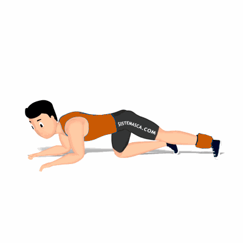

Glúteo 4 Apoios Joelho Estendido

Exercício para hipertrofia e fortalecimento dos glúteos, trabalhando glúteo máximos, médio e mínimo.
Ficha Técnica
Tipo: Musculação
Grupo Muscular: Glúteo
Aparelho: Nenhum
Músculos: Nenhum
Como realizar
- Ajoelhe sobre um colchonete apoiando o troco sobre os cotovelos que devem ficar flexionados em frente ao corpo;
- Coluna alinhada e o rosto virado para baixo;
- Estender a perna direita mantendo-a com uma leve flexão;
- Elevar a perna o mais alto que conseguir, concentrado o esforço no músculo do glúteo;
- Desça a perna controladamente à posição inicial, repita o movimento;
- Ao término das repetições, repita os movimentos com a perna esquerda.
 RC STORE
RC STORE